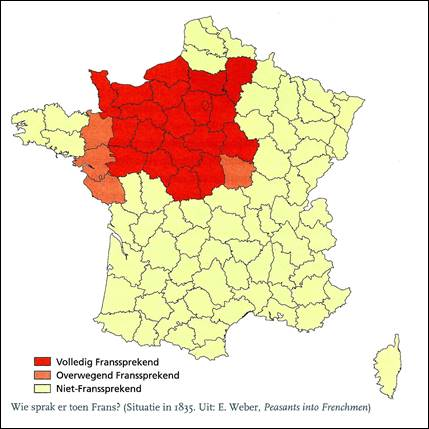
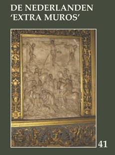

> nieuwsbrief
> 36e jg. - Xe trimester JAAR

Hernieuwen
ledenbijdrage voor 2019
Alhoewel
de hernieuwing van de ledenbijdragen voor 2019 andermaal vlot
verliep blijven enkelen het blijkbaar moeilijk hebben om
spontaan per kerende op onze eerste oproep te reageren.
Misschien wachten ze af wat het nieuwe jaarboek brengen zal? Met
dit nummer van onze Nieuwsbrief
weten ze dit dan. Toetreden kan nog steeds, mits overboeking
van de ledenbijdrage. Even herinneren: de minimumbijdrage blijft
ongewijzigd en bedraagt 29 . In ruil daarvoor verzekeren we u
de stipte toezending van het nieuwe Jaarboek De Nederlanden
extra muros het 41e al dat in de voorbije meimaand
verscheen en van de vier nummers van ons kwartaalblad Nieuwsbrief Zannekin.
Vanaf het bedrag van 35 boeken we u met dank als steunend lid.
Vereffening graag via ons rekeningnummer iban BE13 4648
2202 5139 bic:
KREDBEBB t.n.v.
Vereniging/Stichting ZANNEKIN, Paddevijverstraat 2, B.8900
Ieper.
De Heilige Godelieve
Een aantal jaren geleden werd in het
Frans-Vlaamse Millam een bord geplaatst ter ere van Sint-Mulders
of de Heiige Mildreda nabij de prachtige kapel naar haar naam genoemd in
een glooiend dal. Dit was een samenwerking van de Stichting
Zannekin met EUVO en het Forum van Vlaamse Vrouwen.
In het najaar werken EUVO en de stad Gistel samen met ons aan
de plaatsing van een bord ter ere van de Heilige
Godelieve met de hierna vermelde tekst:
Godelieve (geboren in Heimfriedswilder
°circa 1045 - overleden in Gistel 7 juli 1070) zag het
levenslicht in de nabij gelegen hoeve van Londesvoorde. Als
dochter van de Vlaamse edelman Heimfried, heer van
Heimfriedswilder, werd Godelieve uitgehuwelijkt aan
Bertulf, zoon van de kasteelheer van Gistel (West-Vlaanderen).
Doch ze werd van bij haar komst in Gistel
vooral mede door haar jaloerse schoonmoeder mishandeld.
Daarop nam ze de vlucht naar haar geboorteplaats
Heimfriedswilder. Door een geruststellende tussenkomst van de
bisschop van Doornik Radbod II zou ze onder beschermende
voorwaarden naar Gistel terugkeren, waar ze desondanks en
desalniettemin kort na haar aankomst met een halsdoek werd
gewurgd en in een waterput gegooid.
Bertulf kwam na deze gruwelijke gebeurtenis
tot inkeer. Hij werd zelfs monnik. Mirakels tekenden daarna
Goedelieves leven wat de Doornikse bisschop deed beslissen haar
heilig te verklaren op 30 juli 1084.
Haar feestdag is op 6 juli. Drogo, een
monnik uit Sint-Winoksbergen, beschreef haar leven in 'De Vita
Godeliph'.
Ze wordt aangeroepen voor o.m. genezing van
keel- en oogziekten.
Jaarboek De Nederlanden extra muros 41 (2019)

Ook dit 41e Jaarboek De Nederlanden extra muros brengt
weer een breed palet aan bijdragen over de randgebieden van onze
Lage Landen die deel uitmaken van ons geschiedkundig erfgoed. En
als steeds openen we ook deze editie met de korte bijdrage die
zowat in een notendop het programma van Zannekin verwoordt.
Luc Dequeker staat
stil bij de symboliek die verweven zit in De Romaanse doopvont van
Noordpeene, terwijl Jan van Tongeren
toelichting brengt bij De Doornikse doopvonten in Zedelgem en
Winchester.
Petrus Dathenus en
Nicasius Ellebodius,
twee Kasselse zonen, kregen in 2018
eindelijk een memoriebord in hun geboorteoord. Wido
Bourel schetste toen hun leven en verdiensten. In
de rubriek achteraan leest u een verslag van de
onthullingsplechtigheid en hier alvast Widos toespraak.
Johan Hellinx
onthult in zijn De Franse Revolutie
gezien vanop de zijlijn: het beeld van de Franse bezetter in
enkele historische romans van Clara Viebieg en André Demedts
de parallelle en uiteenlopende tijdslijnen in het oeuvre van beide
auteurs.
Wim van Heugten
besteedt aandacht aan leven en werk van Friedrich Gorissen,
de Nederrijnse historicus, die reeds in het allereerste Zannekin Jaarboek
getuigde van het Nederlandse wezen van zijn geboortetreek.
Omwille van de verstrekkende historische
betekenis van zijn toenmalig (1975) getuigenis hernemen we Friedrich
Gorissens Nederland aan de
Nederrijn, Batavia extra muros.
In Grijze vrouwen voor
Gelres hertogen; het klooster Gravendaal bij Goch
laat Ruud
Bruijns ons kennis maken met het Huis van Gelre en
de cisterciënzerorde die mee aan de oorsprong lag aan het idee om
van Gravendaal het begrafenisoord te maken van dit gravengeslacht.
Henk de Boer
verrast ons met zijn breed essay over Holland in Pruisen, een
mythe ontraadselt. Mede aan de hand
van Vondels Gysbrecht van
Amstel verkent hij voor ons het toenmalige roerige
tijdsbestek van onze Nederlandse geschiedenis, ten gevolge waarvan
Gijsbrecht de wijk diende te nemen. Vondel suggereerde dat Ghy (van Amstel) trekt naet vette land van
Pruissen
// Ghy zult in dit gewest een stad, Nieuw Holland,
bouwen
. Maar omtrent de geschiedenis van Pruisisch
Holland is daarmee niet alles onthuld toont de auteur ten
overvloede aan.
Heike Düselder
tekende al aanwezig in het Zannekin Jaarboek 15 (1993) met een
essay over een Oost-Fries thema. Thans tekent ze present met een
bijdrage over de Culturele betrekkingen
tussen de Nederlanden en Noordwest Duitsland in de context
van de confessionalisering en het gereformeerde
Gemeenteleven, waarbij de taaltoestanden in
het Oost-Friesland van de 18e eeuw een normerende rol speelden.
Met zijn Laatmiddeleeuwse
Amsterdamse kerkelijke kunst in een Nederrijnse stadje: de
monstrans in de Sint-Niklaaskerk van Kalkar
duikt Jan van Tongeren voor de tweede maal
op in deze jaarboekeditie. Hij verhaalt hoe de familie van Jacob
Claesz Brouwer vanuit Amsterdam in Kalkar belandde en met hen de
monstrans en ook tal van andere kerkelijke kunstwerken.
Op het verhaal over de Doornikse
doopvont van Noordpeene en de rede bij de onthulling van de
memorieplaat voor Dathenus en Ellebodius te Kassel na, komen de
Franse Nederlanden er in dit jaarboek eerder bekaaid van af. Leo
Camerlynck brengt in deze evenwel wat evenwicht
met zijn bijdragen over Johannes Despauterius
uit Komen en met Belle (Bailleul) in
Frans-Vlaanderen. Naast een terugblik op de
geschiedenis van het stadje stippelde hij daarbij meteen een
wandelroute uit die de bezoeker beslist van dienst kan zijn bij de
verkenning van het ook toeristisch aantrekkelijke Belle.
Met dezelfde auteur verwijlen we
tenslotte ook nog even bij de dichter van het In
Flanders Fields, John MacCrae, vooraleer met
de Kroniek
en boekbesprekingen ons jaarboek traditioneel af te sluiten.
______________________
N.a.v.
Jaarboek
De Nederlanden extra muros 41 (2019).
Gen. 208 p. Ledenprij 29 ; niet-leden 35 . Te bestellen via
overschrijving van dit bedrag op rekening BE13 4648 2202 5139
t.n.v. Vereniging/Stichting ZANNEKIN, Paddevijverstraat 2,
B.8900 Ieper
Zannekin-Ontmoetingsdag te Leiden op zaterdag 19 oktober
Dagprogramma:
10.30-11.00 uur:
ontvangst met koffie en een gebakje in Stadscafé Van der Werff,
Steenstraat 2, 2312 BW Leiden.
11.00-11.10 uur:
opening en welkomstwoord door Leo Camerlynck.
11.10-11.45 uur:
lezing door de Leidse historicus Cor Smit.
11.45-12.00 uur:
vragen.
12.00-12.45 uur:
Lezing. door Dick Wortel over Zuid-Nederlandse vluchtelingen
waaronder Frans-Vlamingen in Leiden.
12.45-14.00 uur:
Lunch.
14.00-16.00 uur:
Wandeling door de stad langs punten die betrekking hebben op de
Vlaamse en Waalse immigratie.
16.00-17.00 uur:
Afsluitende borrel in Het Pakhuis, Doelensteeg 8, 2311 VL
Leiden. Via een Rembrandt-route kan naar het NS-station Leiden
Centraal worden gewandeld.
Deelnamebijdrage: de kostprijs van
deze dag beloopt alles inbegrepen (ontvangst, lunch, lezingen,
toegangen, afsluitborrel): 40 per persoon; (niet leden 50
per persoon) en dient vereffend te worden bij inschrijving.
Inschrijven kan tot uiterlijk 15 oktober via het
Zannekin-secretariaat, Paddevijverstraat 2, B.8900 Ieper
(e-adres: maurits.cailliau@skynet.be
)
Parkeren binnen de singels is in Leiden erg
duur. Alternatieven: Parkeergarage bij Molen De Valk.
Parkeermogelijkheid ook aan de Haagweg. Ook mogelijk: gratis
parkeren bij NS-station De Vink en vandaar met de trein (duur: 4
min.) of met de bus (lijnen 1, 2, 3 en 4 naar NS station Leiden
Centraal). Leiden is uitstekend te bereiken met de trein.
Omtrent
het parkeren vormt
onderstaande tip misschien wel een nuttige aanvulling: Aan de
noorduitgang van station Leiden Centraal ligt de wijk
Houtkwartier tegenover het Leids Universitair Medisch Centrum.
Op zaterdag en zondag is het vrij parkeren in deze
wijk. Lopen daar vandaan naar b.v. Stadscafé Van der Werff
vraagt slechts 10-15 minuten.
Achtergondinformatie omtrent onze dag
in Leiden
Méér uitgebreide achtergrondinfo omtrent
onze Ontmoetingsdag te Leiden op 19 oktober zal te lezen zijn in
de Zannekin-Nieuwsbrief
4/2019, die in de laatste dagen van september verstuurd zal
worden. Noteer ondertussen alvast de datum van 19 oktober!
Dit
jaar is het 180 jaar geleden dat op 19 april het Verdrag van
Londen werd gesloten. Na de val van Napoleon in 1815 behoorde het
Grote Limburg tot de Verenigde Nederlanden. Het was een
samenvoeging van wat voorheen de provincie Beneden-Maas was met
delen van het voormalige Roerdepartement. In feite: een
lappendeken van allerhande gebieden en gebiedjes, waarvan het
grootste het voormalige graafschap Loon was. Slechts een klein
stuk van het oude hertogdom Limburg (nu grotendeels in Luik)
behoorde er toe. Maar toch wilde koning Willem l dat de oude
historische naam bewaard bleef en bijgevolg werd het allemaal
Limburg genoemd.
Aan
de revolutie van 1830 deed Limburg nauwelijks mee, behoudens
enkele lokale incidenten in de steden. Eigenlijk stond Limburg dus
aan de Belgische kant. Enkel Maastricht bleef hardnekkig trouw aan
de Oranjes. Pas in 1839 koos Willem l eieren voor zijn geld en
ging akkoord met het Verdrag van Londen, dat bepaalde dat België
het westelijk deel van de provincie Luxemburg kreeg (maar afstand
moest doen van zijn eisen op Zeeuws-Vlaanderen, iets dat men na
1918 plots vergeten was), terwijl het oostelijk deel naar
Nederland ging. In Nederland werd wel geprotesteerd tegen die
regeling, maar dat was van voorbijgaande aard. Als norm werd de
loop van de Maas aangehouden, behalve rond Maastricht, waar
Nederland een strook grond aan de linkeroever van de Maas wist te
verwerven. Om juist te zijn: 2,3 km. Zo ver konden de kanonnen in
die tijd schieten, zodat het zeker was dat België nooit de
vestingmuren van die stad zou kunnen beschieten. Men sprak dan ook
over de kanongrens. Toch bleef de toestand nog vele jaren erg
onduidelijk. Lommel, dat vroeger altijd Brabants was geweest en
sinds de scheiding van de 17e eeuw tot de Noordelijke Nederlanden
had behoort, werd Belgisch, alsook het gehucht Kinrooi. Het duurde
nog tot 1843 vooraleer de grens in detail werd vastgelegd (we
weten dat het onafhankelijke Moresnet daar zijn bestaan aan te
danken heeft). Ja, zo ontstaan volkeren!
Ter
herdenking van die scheiding organiseerde de stad Maastricht in
het Gouvernement aan de Maas een tentoonstelling: Gekaderd,
waaraan ook het Belgisch-Limburgs provinciebestuur meewerkt en die
liep tot 30 augustus.
De Belgische journalist Marc Metdepenningen hanteert bijwijlen een vlijmscherpe